library(monty)13 Samplers and inference
Many quantities of interest in uncertain systems can be expressed as integrals that weight outcomes according to their probability. A common approach to computing these integrals is Monte Carlo estimation, where we draw samples from our distribution of interest and take their mean as an approximation. This method has been central to probabilistic inference and has driven the development of sophisticated sampling algorithms since the advent of modern computing in the 1950s.
The monty package supports several sampling algorithms designed to handle a variety of target distributions and leverage any available information (such as gradients). At the moment, monty provides the following samplers:
- Random-Walk Metropolis-Hastings (RWMH) – a simple and robust MCMC sampler which does not require gradient information.
- Adaptive Metropolis-Hastings – an extension of RWMH that can adapt its proposal distribution on the fly, improving efficiency over time.
- Hamiltonian Monte Carlo (HMC) – a gradient-based sampler that can drastically reduce autocorrelation in the chain, particularly for high-dimensional or strongly correlated targets.
- Parallel Tempering – a technique for tackling multimodal or complex distributions by running multiple “tempered” chains and exchanging states between them.
These samplers can all be accessed via constructors (e.g. monty_sampler_random_walk(), monty_sampler_hmc(), etc.) and used with the general-purpose function monty_sample(). By choosing the sampler that best suits your distribution - whether it is unimodal or multimodal, gradient-accessible or not - you can often achieve more efficient exploration of your parameter space.
13.1 Sampling without monty
In this section we are going to see an example where we can sample from a monty model without using monty. The idea is then to compare this ideal situation with less favourable cases when we have to use Monte Carlo methods to sample.
Imagine that we have a simple 2D (bivariate) Gaussian monty_model model with some positive correlation:
# Set up a simple 2D Gaussian model, with correlation
VCV <- matrix(c(1, 0.8, 0.8, 1), 2, 2)
m <- monty_example("gaussian", VCV)
m
#>
#> ── <monty_model> ───────────────────────────────────────────────────────────────
#> ℹ Model has 2 parameters: 'a' and 'b'
#> ℹ This model:
#> • can compute gradients
#> • can be directly sampled from
#> ℹ See `?monty_model()` for more informationThis monty_model is differentiable and can be directly sampled from (a very low level way of “sampling” that means different things depending on the situation e.g. could mean sampling from the prior distribution, we advise to use it very carefully).
In that particularly simple case, we can even visualise its density over a grid:
a <- seq(-4, 4, length.out = 1000)
b <- seq(-3, 3, length.out = 1000)
z <- matrix(1,
nrow = length(a),
ncol = length(b))
for(i in seq_along(a))
for(j in seq_along(b))
z[i,j] <- exp(monty_model_density(m, c(a[i], b[j])))
image(a, b, z, xlab = "a", ylab = "b",
main = "2D Gaussian model with correlation")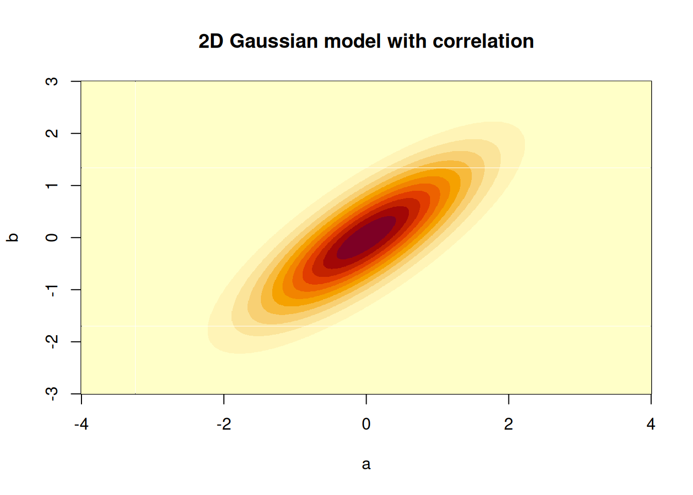
As we are dealing with a bivariate normal distribution, we can use a trick to sample easily from this distribution. We use samples from a simple standard normal distribution and multiply them by the Cholesky decomposition of the Variance-Covariance parameter matrix of our bivariate normal distribution:
n_samples <- 1000
standard_samples <- matrix(rnorm(2 * n_samples), ncol = 2)
samples <- standard_samples %*% chol(VCV)These samples align well with the density:
image(a, b, z, xlab = "a", ylab = "b",
main = "2D Gaussian model with samples")
points(samples, pch = 19, col = "#00000055")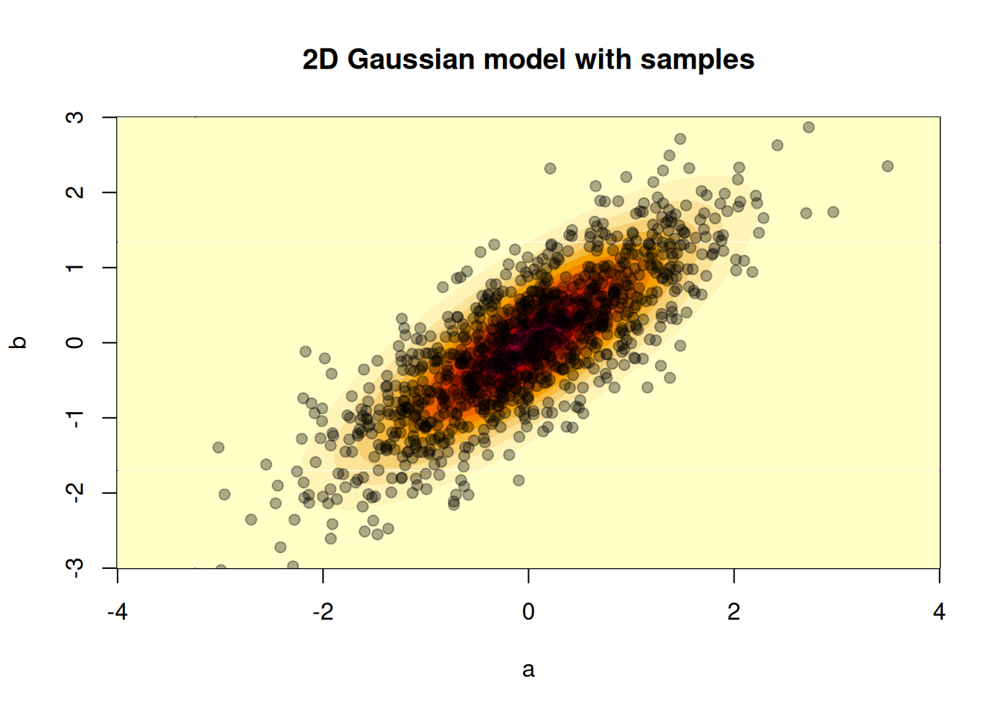
They are i.i.d. and present no sign of autocorrelation, which can be visualised using the acf() function - successive samples (i.e. lagged by one) in this case do not present any sign of correlation.
acf(samples[, 1],
main = "Autocorrelation of i.i.d. samples")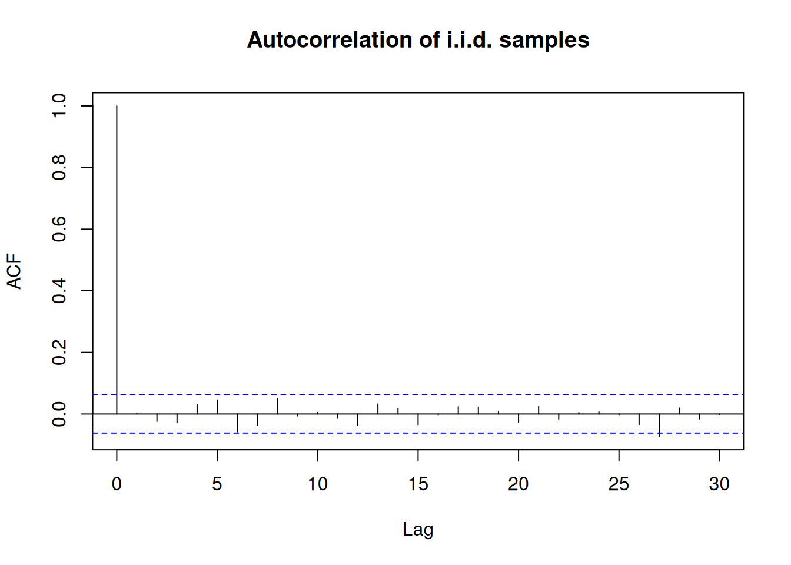
13.2 Sampling with monty
However most of the time, in practical situations such as Bayesian modelling, we are not able to sample using simple functions, and we have to use an MCMC sampler. monty samplers exploit the properties of the underlying monty model (e.g. availability of gradient) to draw samples. While they differ, a key commonality is that they are based on a chain of Monte Carlo draws and are thus characterised by their number of steps in the chain, n_steps. Also, they are built using a constructor of the form monty_sampler_name() and then samples are generated using the monty_sample() function.
13.2.1 Randow-Walk Metropolis-Hastings
Random-Walk Metropolis-Hastings (RWMH) is one of the most straightforward Markov chain Monte Carlo (MCMC) algorithms. At each iteration, RWMH proposes a new parameter vector by taking a random step - usually drawn from a symmetric distribution (e.g. multivariate normal with mean zero) - from the current parameter values. This new proposal is then accepted or rejected based on the Metropolis acceptance rule, which compares the density of the proposed point with that of the current point.
The random-walk nature of the proposal means that tuning the step size and directionality (defined by a variance-covariance matrix in multiple dimensions) is crucial. If steps are too large, many proposals will be rejected; if they are too small, the chain will move slowly through parameter space, leading to high autocorrelation in the samples. RWMH can be a good starting point for problems where gradient information is unavailable or when simpler methods suffice.
The monty_sampler_random_walk() function allows us to define an RWMH sampler by passing the Variance-Covariance matrix of the proposal distribution as an argument.
vcv <- diag(2) * 0.1
sampler_rw <- monty_sampler_random_walk(vcv = vcv)Once the sampler is built, the generic monty_sample() function can be used to generate samples:
res_rw <- monty_sample(m, sampler_rw, n_steps = 1000)
#> ⡀⠀ Sampling ■ | 0% ETA: 3s
#> ✔ Sampled 1000 steps across 1 chain in 42ms
#> This produces a chain of length n_steps that can be visualised:
plot(res_rw$pars[1, , 1],
type = "l",
ylab = "Value of sample",
main = "MCMC chain from RWMH sampler")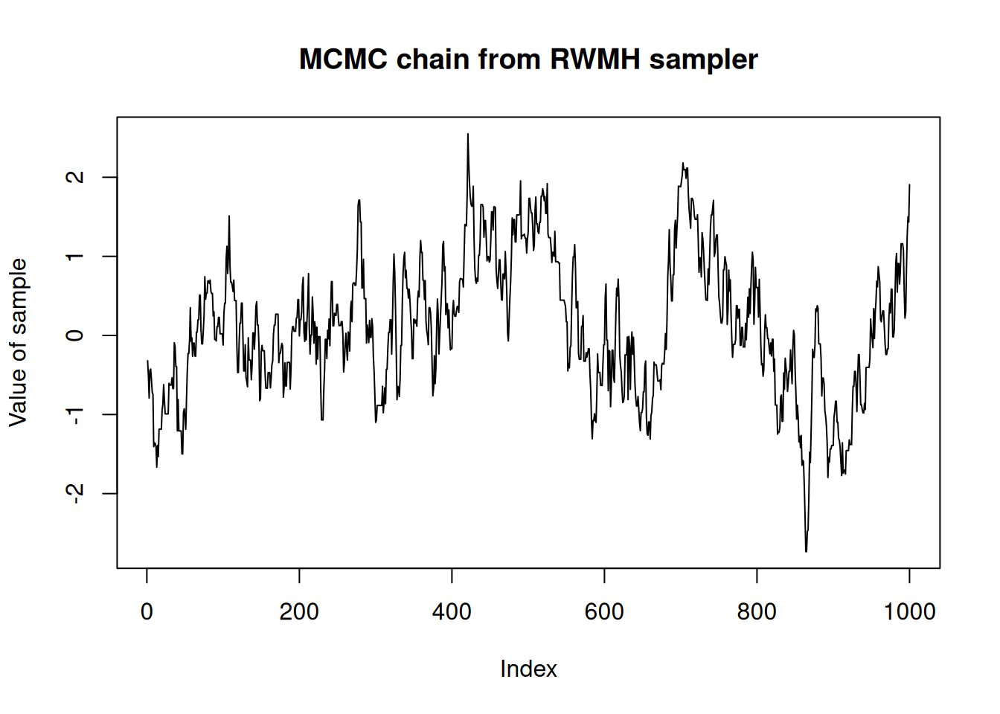
Samples can also be visualised over the density:
image(a, b, z, xlab = "a", ylab = "b",
main = "2D Gaussian model with RWMH samples")
points(t(res_rw$pars[, , 1]), pch = 19, col = "#00000055")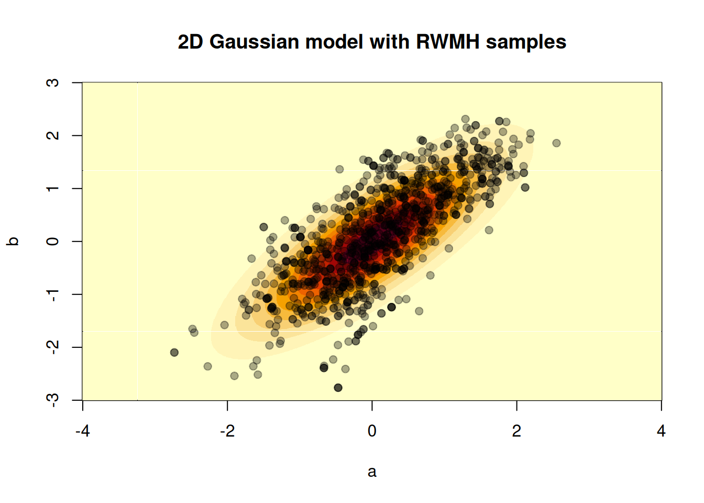
And we can look at the autocorrelation of the chain
acf(res_rw$pars[1, , 1], 200,
main = "Autocorrelation of the RWMH samples")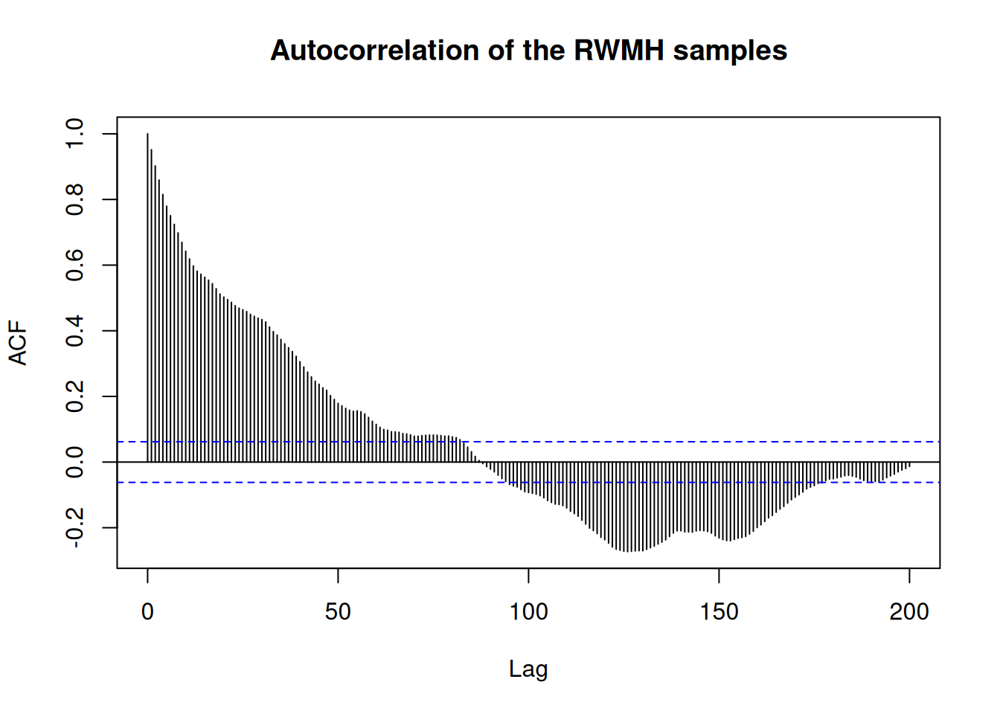
We can see from the autocorrelation function that we have to wait almost 100 steps for the algorithm to produce a “new” (i.e. not correlated) sample, meaning a lot of calculation is “wasted” just trying to move away from previous samples. Improving the number of uncorrelated samples is at the heart of many strategies to improve the efficiency of Monte Carlo sampling algorithms. In particular, the adaptive Metropolis-Hastings sampler offers tools to automatically optimise the proposal distribution.
13.2.1.1 Boundaries
There is a boundaries argument to monty_sampler_random_walk (and some other samplers too), which controls what happens when your domain is bounded in one or more dimensions and the Gaussian proposal results in proposed parameter set out of bounds. There are three options:
"reflect"- where an out-of-bounds proposal is reflected back into bounds to ensure a valid proposed parameter set, where the density is then calculated in order to potentially accept or reject."reject"- where an out-of-bounds proposal results in an automatic rejection (without density calculation) at that step in the MCMC chain, and the current parameter set is retained."ignore"- where the density is calculated for the out-of-bounds parameter set. This option is to be used carefully as it may result in accepting samples out-of-bounds, or perhaps might result in an error.
Let’s look at a bounded model, where we have parameters a and b that are bounded below at 0.
m <- monty_dsl({
a ~ TruncatedNormal(0, 1, min = 0, max = Inf)
b ~ TruncatedNormal(0, 1, min = 0, max = Inf)
}, gradient = FALSE)Suppose the Gaussian proposal resulted in \(a = -1, b = 2\), which is out-of-bounds. With the "reject" option we would just reject and move onto the next step. With the "reflect"option, we would reflect about \(a = 0\) to give \(a = 1, b = 2\) as our proposed parameter set and calculate the density there. With the "ignore" option we would keep \(a = -1, b = 2\) as the proposed parameter set and calculate the density for it (safely in this example as the log-density is defined as -Inf when out of bounds of the truncated-normal distribution).
Let’s run the sampler with boundaries = "reject"
vcv <- diag(2)
sampler_reject <- monty_sampler_random_walk(vcv = vcv, boundaries = "reject")
res_reject <- monty_sample(m, sampler_reject,
n_steps = 1000, initial = c(1, 1))and with boundaries = "reflect"
sampler_reflect <- monty_sampler_random_walk(vcv = vcv, boundaries = "reflect")
res_reflect <- monty_sample(m, sampler_reflect,
n_steps = 1000, initial = c(1, 1))we see that the acceptance rate by reflecting at boundaries is higher due to always proposing a valid parameter set
sum(diff(c(res_reject$initial[1], res_reject$pars[1, , 1])) != 0) / 1000
#> [1] 0.274
sum(diff(c(res_reflect$initial[1], res_reflect$pars[1, , 1])) != 0) / 1000
#> [1] 0.548and it has also resulted in higher effective sample size (ESS)
posterior::summarise_draws(posterior::as_draws_df(res_reject))
#> # A tibble: 2 × 10
#> variable mean median sd mad q5 q95 rhat ess_bulk ess_tail
#> <chr> <dbl> <dbl> <dbl> <dbl> <dbl> <dbl> <dbl> <dbl> <dbl>
#> 1 a 0.716 0.555 0.569 0.568 0.0684 1.82 1.04 80.3 52.3
#> 2 b 0.770 0.670 0.590 0.572 0.0310 1.99 1.02 79.3 64.4
posterior::summarise_draws(posterior::as_draws_df(res_reflect))
#> # A tibble: 2 × 10
#> variable mean median sd mad q5 q95 rhat ess_bulk ess_tail
#> <chr> <dbl> <dbl> <dbl> <dbl> <dbl> <dbl> <dbl> <dbl> <dbl>
#> 1 a 0.719 0.601 0.540 0.509 0.0595 1.82 1.00 262. 225.
#> 2 b 0.768 0.626 0.619 0.576 0.0502 1.96 1.01 201. 179.We have boundaries = "reflect" as the default as we expect this is what users will want in most cases, though there may be situations in which boundaries = "reject" is more useful and quicker per MCMC step (due to skipping a number of density calculations), although you may then need more steps to achieve the same effective sample size as with boundaries = "reflect". In situations where you are unlikely to propose out-of-bounds, there will be little difference between the options.
13.2.2 Adaptive Metropolis-Hastings Sampler
Overview
This sampler extends the basic (non-adaptive) random-walk Metropolis-Hastings algorithm by dynamically updating its proposal distribution as the chain progresses. In a standard random-walk MCMC, one must guess a single variance-covariance matrix (VCV) up front. If the target distribution is high-dimensional or has strong correlations, it can be challenging to find a VCV that allows the chain to explore efficiently.
With this adaptive approach, the VCV and the overall scaling factor evolve according to the observed samples. The sampler “learns” the covariance structure of the target distribution on-the-fly, leading to (potentially) much lower autocorrelation, better mixing, and more efficient exploration. Formally, this adaptivity modifies the Markov property, so care must be taken to ensure the adaptation “diminishes” over time.
Main ideas
- Adaptive Shaping
- After each iteration, the algorithm updates an empirical VCV using the newly accepted parameter values.
- Early samples are gradually forgotten (depending on
forget_rateandforget_end) so that the empirical VCV primarily reflects the more recent part of the chain. This is helpful if the chain starts far from the high posterior density region - early samples will be informative about the shape of movement towards this region but once there will not be informative about the shape of the region itself. - In the proposal kernel, the empirical VCV is weighted according to its sample size against an initial estimate of the VCV,
initial_vcv, with weightinitial_vcv_weight.
- After each iteration, the algorithm updates an empirical VCV using the newly accepted parameter values.
- Adaptive Scaling
- The sampler also updates a global scaling factor (which is squared and multiplied by \(2.38^2 / d\) in the proposal, where \(d\) is the number of parameters) to target a desired acceptance rate (
acceptance_target). The optimal scaling factor should be 1 in a Gaussian target space when using the true underlying VCV. - If acceptance is too high, the sampler increases the scaling factor. If acceptance is too low, it decreases it. Doing this in log-space is often more stable (
log_scaling_update = TRUE).
- The sampler also updates a global scaling factor (which is squared and multiplied by \(2.38^2 / d\) in the proposal, where \(d\) is the number of parameters) to target a desired acceptance rate (
- Adaptation Stopping
- Eventually, the sampler stops adapting (
adapt_end), freezing the proposal distribution for the remainder of the run. This helps restore formal MCMC convergence properties, as purely adaptive samplers can break standard theory if they keep adapting indefinitely.
- Eventually, the sampler stops adapting (
This implementation is inspired by an “accelerated shaping” adaptive algorithm from Spencer (2021).
NoteExpand for technical details of the adaptive algorithm
At iteration \(i\), we propose our new parameter set \(Y_{i+1}\) given current parameter set \(X_i\) (\(d\) is the number of fitted parameters):
\[\begin{align*} Y_{i+1}\sim N\left(X_i, \frac{2.38^2}{d}\lambda_i^2V_i\right) \end{align*}\]
The algorithm can be broken into two parts:
- the shaping part, which determines \(V_i\)
- the scaling part, which determines \(\lambda_i\)
1. Shaping
The shaping is controlled by the following input parameters to monty_sampler_adaptive():
initial_vcv: the initial estimate of the variance-covariance matrix (VCV)initial_vcv_weight: the prior weight on the initial VCVforget_rate: the rate at which we forget early parameter setsforget_end: the final iteration at which we can forget early parameter setsadapt_end: the final iteration at which we adaptively update the proposal VCV (also applies to scaling)
Additionally, the shaping algorithm involves calculation of an empirical VCV, which after iteration \(i\) is given by \[\begin{align*} vcv_i & = cov\left(X_{\lfloor forget\_rate * \min\{i,\, forget\_end,\, adapt\_end\}\rfloor+1}, \ldots, X_{\min\{i,\, adapt\_end\}}\right). \end{align*}\] Thus while iteration \(i \leq adapt\_end\) the empirical VCV is updated by including the new parameter set \(X_i\), but additionally while \(i \leq forget\_end\) we remove (“forget”) the earliest parameter set remaining from the empirical VCV sample if \(\lfloor forget\_rate * i \rfloor > \lfloor forget\_rate * (i - 1) \rfloor\) . After \(forget\_end\) iterations we no longer forget early parameter sets from the sample VCV, and after \(adapt\_end\) iterations the empirical VCV is no longer updated.
With \(weight_i\) being the size of the empirical VCV sample, we then weight the empirical VCV and initial VCV: \[\begin{align*} V_i = \frac{weight_i*sample\_vcv_i + \left(initial\_vcv\_weight+d+1\right)*initial\_vcv}{weight_i+initial\_vcv\_weight+d+2} \end{align*}\] (Note: weightings in numerator do not add up to denominator.)
2. Scaling
The shaping is controlled by the following input parameters to monty_sampler_adaptive():
initial_scaling: the initial value for scaling (\(\lambda_0\))min_scaling: the minimum value for scalingscaling_increment: the increment we use to increase or decrease the scalingacceptance_target: the acceptance rate we targetinitial_scaling_weight: value used in the starting denominator of the scaling updatepre_diminish: the number of iterations before we apply diminishing adaptation to the scaling updateslog_scaling_change: logical whether we update the scaling on a log scale or notadapt_end: the final iteration at which we adaptively update the proposal VCV (also applies to shaping)
initial_scaling_weight can be unspecified (NULL), in which case we use \[initial\_scaling\_weight = \frac{5}{acceptance\_target * (1 - acceptance\_target)}\]
scaling_increment can be unspecified (NULL), in which case we use \(scaling\_increment = \frac{1}{100}\) if \(\log\_scaling\_change\) is \(FALSE\), otherwise \[\begin{align*}
scaling\_increment & = \left(1 - \frac{1}{d}\right) \left(\frac{\sqrt{2\pi}}{2A}\exp\left(\frac{A ^ 2}{2}\right)\right)\\
& \quad \quad + \frac{1}{d * acceptance\_target * (1 - acceptance\_target)},
\end{align*}\] where \(A = -\psi^{-1}(acceptance\_target/2)\) and \(\psi^{-1}\) is the inverse cdf of a standard normal distribution.
We update scaling after iteration \(i\leq adapt\_end\) based on the acceptance probability at that iteration \(\alpha_i\) with \[\begin{align*} scaling\_change_i & = \frac{scaling\_increment}{\sqrt{scaling\_weight_i + \max\{0,\, i - pre\_diminish\}}}(\alpha_i - acceptance\_target) \end{align*}\]
then
- if \(log\_scaling\_change = TRUE\): \[\begin{align*} \log(\lambda_i) & = \max\left\{\log(min\_scaling), \log(\lambda_{i-1}) + scaling\_change_i\right\} \end{align*}\]
- if \(log\_scaling\_change = FALSE\): \[\begin{align*} \lambda_i = \max\left\{min\_scaling, \lambda_{i-1} + scaling\_change_i\right\}. \end{align*}\]
So when the acceptance probability is larger than acceptance_target the scaling is increased, whereas when the acceptance probability is larger than acceptance_target the scaling is decreased. After \(adapt\_end\) iterations, we no longer update the scaling.
13.2.2.1 Example: Adaptive vs. Non-adaptive Metropolis-Hastings
Below is a simple demonstration showing how to use the adaptive sampler on a multivariate Gaussian example, comparing it against the basic random-walk approach. The target Gaussian has some correlation in its variance-covariance matrix, so the adaptive sampler’s ability to learn this correlation on the fly can be advantageous.
We return to our a simple 2D (bivariate) Gaussian monty_model model:
# Set up a simple 2D Gaussian model, with correlation
VCV <- matrix(c(1, 0.8, 0.8, 1), 2, 2)
m <- monty_example("gaussian", VCV)
m
#>
#> ── <monty_model> ───────────────────────────────────────────────────────────────
#> ℹ Model has 2 parameters: 'a' and 'b'
#> ℹ This model:
#> • can compute gradients
#> • can be directly sampled from
#> ℹ See `?monty_model()` for more informationWe’ll start both samplers from the same initial value, away from the target space.
# 1. Run RWMH starting away from target space
sampler_rw <- monty_sampler_random_walk(vcv)
res_rw <- monty_sample(m, sampler_rw, n_steps = 1000, initial = c(5, -5))
# 2. Adaptive sampler:
sampler_adaptive <- monty_sampler_adaptive(
initial_vcv = vcv, # start from the same guess
initial_vcv_weight = 10, # weight for the initial guess
initial_scaling = 1,
acceptance_target = 0.234, # desired acceptance rate
forget_rate = 0.2, # regularly forget earliest samples
adapt_end = 300, # stop adapting after 300 iterations
boundaries = "reflect" # default reflection at domain edges
)
# Run adaptive samplers for 1,000 iterations
res_adaptive <- monty_sample(m, sampler_adaptive, n_steps = 1000,
initial = c(5, -5))We can then compare the chains
# Compare the chains for parameter a
plot(res_adaptive$pars[1, , ], type = "l", col = 4, xlab = "Iteration",
ylab = "a", main = "Comparison of RWMH vs. Adaptive M-H")
lines(res_rw$pars[1, , ], type = "l", col = 2)
legend("topright", legend = c("Random-Walk", "Adaptive"),
col = c(2, 4), lty = 1, bty = "n")
and while the acceptance rate for the adaptive sampler is lower in this case
## Acceptance rate of RW sampler
sum(diff(c(res_rw$initial[1], res_rw$pars[1, , 1])) != 0) / 1000
#> [1] 0.369
## Acceptance rate of adaptive sampler
sum(diff(c(res_adaptive$initial[1], res_adaptive$pars[1, , 1])) != 0) / 1000
#> [1] 0.23the adaptive sampler produces less autocorrelation
acf(res_rw$pars[1, , 1], 200,
main = "Autocorrelation of the RWMH samples")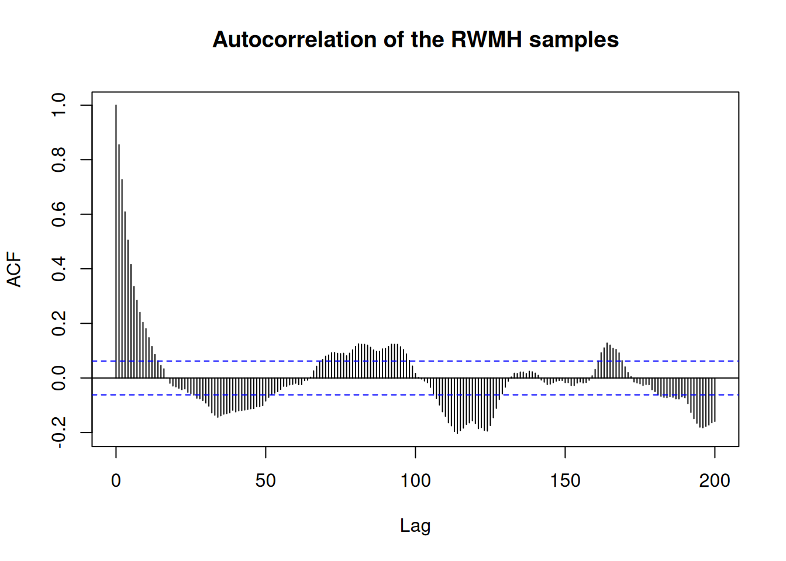
acf(res_adaptive$pars[1, , 1], 200,
main = "Autocorrelation of the Adaptive M-H samples")and higher effective sample size (ESS)
df_rw <- posterior::as_draws_df(res_rw)
posterior::summarise_draws(df_rw)
#> # A tibble: 2 × 10
#> variable mean median sd mad q5 q95 rhat ess_bulk ess_tail
#> <chr> <dbl> <dbl> <dbl> <dbl> <dbl> <dbl> <dbl> <dbl> <dbl>
#> 1 a -0.135 -0.215 0.905 0.864 -1.59 1.31 1.01 90.7 250.
#> 2 b -0.214 -0.188 1.03 0.914 -1.78 1.24 1.01 69.8 75.4
df_adaptive <- posterior::as_draws_df(res_adaptive)
posterior::summarise_draws(df_adaptive)
#> # A tibble: 2 × 10
#> variable mean median sd mad q5 q95 rhat ess_bulk ess_tail
#> <chr> <dbl> <dbl> <dbl> <dbl> <dbl> <dbl> <dbl> <dbl> <dbl>
#> 1 a 0.00304 -0.0141 0.949 0.962 -1.56 1.62 1.02 53.2 139.
#> 2 b -0.126 -0.0800 1.00 1.13 -1.78 1.42 1.02 74.2 116.This is because the initial estimate of the VCV had too small variance, so while the MHRW sampler moves more frequently, its moves a small so the target space is explored slowly. The adaptive sampler learns to move around the space more optimally.
In the above code:
- Random-Walk Metropolis uses a fixed variance-covariance matrix (
vcv_initial) throughout the chain. - Adaptive Metropolis-Hastings starts with the same matrix but actively refines it. You should see that the adaptive sampler often converges to a better proposal distribution, leading to improved mixing and typically higher log densities (indicating that the chain is exploring the posterior more effectively).
You can also inspect the final estimated variance-covariance matrix from the adaptive sampler:
# Show the final estimate of the VCV from the adaptive sampler
# (s_adaptive$details is updated after each chain)
est_vcv <- res_adaptive$details$vcv
print(est_vcv)
#> , , 1
#>
#> [,1] [,2]
#> [1,] 1.3232696 0.8668864
#> [2,] 0.8668864 0.8093146Over many iterations, this matrix will reflect the empirical correlation structure of the target distribution—showing how the chain has “learned” the shape of the posterior. We can also plot the scaling factor to see how it evolved over the chain
plot(res_adaptive$details$scaling_history, type = "l", xlab = "Iteration",
ylab = "Scaling factor")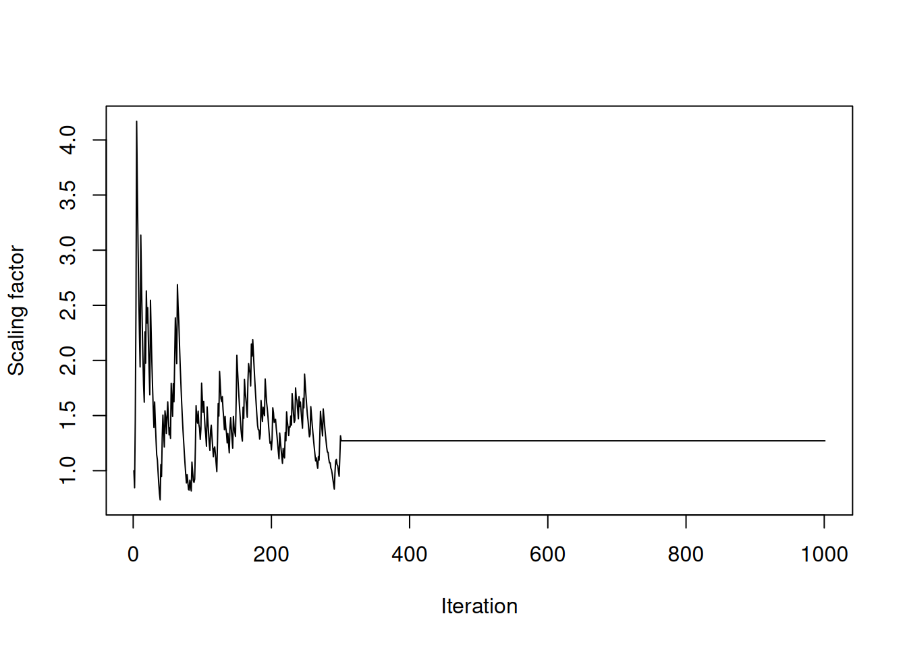
Summary
- This Adaptive Metropolis-Hastings sampler is especially helpful in moderate to high dimensions or when the posterior exhibits nontrivial correlations.
- By updating the proposal’s scale and shape in real time, it can achieve more stable acceptance rates and faster convergence compared to a fixed random-walk approach.
- The user has fine-grained control via parameters like acceptance_target, forget_rate, and adapt_end, allowing adaptation to be tailored to the problem at hand.
Feel free to experiment with different settings—particularly the forgetting and adaptation window parameters—to see how they affect convergence and mixing for your particular model.
13.2.3 Hamiltonian Monte Carlo
Hamiltonian Monte Carlo (HMC) leverages gradient information of the log-density to make proposals in a more directed manner than random-walk approaches. By treating the parameters as positions in a physical system and introducing “momentum” variables, HMC uses gradient information to simulate Hamiltonian dynamics to propose new states. This often allows the sampler to traverse the parameter space quickly, reducing random-walk behaviour and yielding lower autocorrelation.
Under the hood, HMC introduces auxiliary “momentum” variables that share the same dimensionality as the parameters. At each iteration, the momentum is drawn from a suitable distribution (typically multivariate normal) that decides the initial (random) direction of the move. The algorithm then performs a series of leapfrog steps that evolve both the parameter and momentum variables forward in “fictitious time.” These leapfrog steps use the gradient of the log-posterior to move through parameter space in a way that avoids the random, diffusive behaviour of simpler samplers. Crucially, at the end of these steps, a Metropolis-style acceptance step ensures that the correct target distribution is preserved. For a more complete introduction, you can see (Neal 2011).
Tuning HMC involves setting parameters such as the step size (often denoted \(\epsilon\)) and the number of leapfrog (or integration) steps. A small step size improves the accuracy of the leapfrog integrator but increases computational cost, whereas too large a step size risks poor exploration and lower acceptance rates. Likewise, the number of leapfrog steps determines how far the chain moves in parameter space before proposing a new sample. Balancing these factors can initially be more involved than tuning simpler methods like random-walk Metropolis. However, modern approaches - such as the No-U-Turn Sampler (NUTS) (Hoffman and Gelman 2014) - dynamically adjust these tuning parameters, making HMC more user-friendly and reducing the need for extensive manual calibration. Although NUTS is not yet available in monty, it is a high priority on our development roadmap.
By leveraging gradient information, HMC is often able to navigate complex, high-dimensional, or strongly correlated posteriors far more efficiently than random-walk-based approaches. Typically, it exhibits substantially lower autocorrelation in the resulting chains, meaning fewer samples are needed to achieve a given level of accuracy in posterior estimates. As a result, HMC has become a default choice in many modern Bayesian libraries (e.g. Stan, PyMC). Nevertheless, HMC’s reliance on smooth gradient information limits its applicability to models where the target density is differentiable - discontinuities can pose significant challenges. Moreover, while HMC can drastically reduce random-walk behaviour, the additional computations required for gradient evaluations and Hamiltonian integration mean that it is not always faster in absolute wall-clock terms, particularly for models with costly gradient functions.
13.2.3.1 An Illustrative Example: The Bendy Banana
To see HMC in action, we can compare it against a random-walk Metropolis sampler on a two-dimensional “banana”-shaped function. Our model takes two parameters alpha and beta, and is based on two successive simple draws, with one conditional on the other, so \(\beta \sim Normal(1,0)\) and \(\alpha \sim Normal(\beta^2, \sigma)\), with \(\sigma\) the standard deviation of the conditional draw.
We include this example within the package; here we create a model with \(\sigma = 0.5\):
m <- monty_example("banana", sigma = 0.5)
m
#>
#> ── <monty_model> ───────────────────────────────────────────────────────────────
#> ℹ Model has 2 parameters: 'alpha' and 'beta'
#> ℹ This model:
#> • can compute gradients
#> • can be directly sampled from
#> • accepts multiple parameters
#> ℹ See `?monty_model()` for more informationWe can plot a visualisation of its density by computing the density over a grid. Normally this is not possible, but here it’s small enough to illustrate:
a <- seq(-2, 6, length.out = 1000)
b <- seq(-2.5, 2.5, length.out = 1000)
z <- outer(a, b, function(alpha, beta) {
exp(monty_model_density(m, rbind(alpha, beta)))
})
image(a, b, z, xlab = "alpha", ylab = "beta")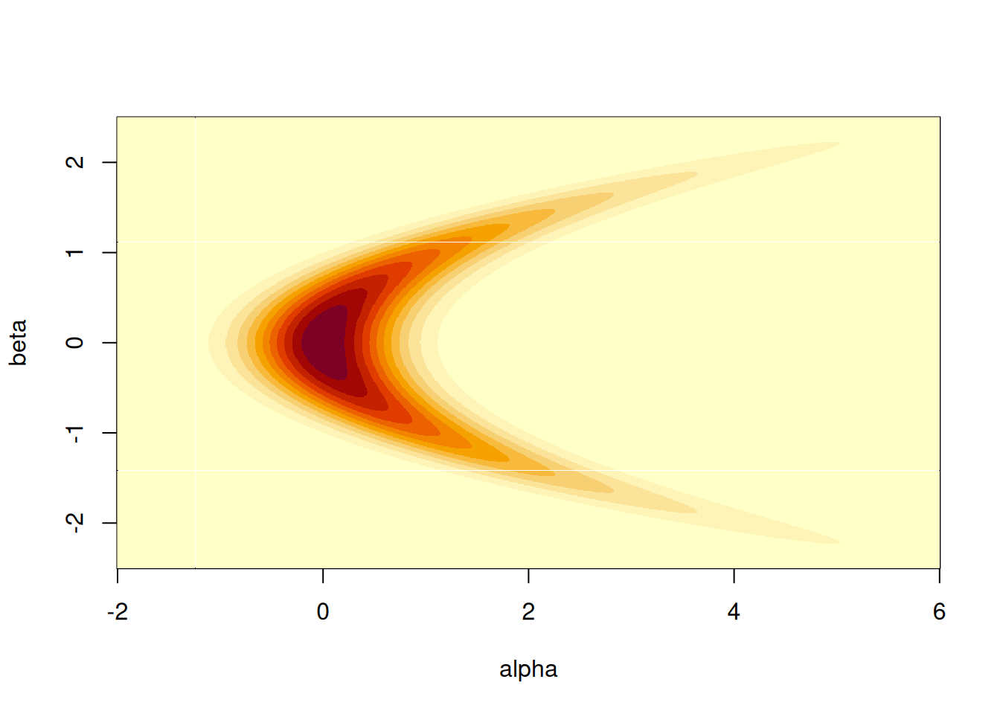
In this particular case we can also easily generate samples directly from the model, so we know what a good sampler should produce:
rng <- monty_rng_create()
s <- vapply(seq(200), function(x) monty_model_direct_sample(m, rng), numeric(2))
image(a, b, z, xlab = "alpha", ylab = "beta")
points(s[1, ], s[2, ], pch = 19, col = "#00000055")It is also possible to compute the 95% confidence interval of the distribution using the relationship between the standard bivariate normal distribution and the banana-shaped distribution as defined above. We can check that roughly 10 samples (out of 200) are out of this 95% CI contour:
theta <- seq(0, 2 * pi, length.out = 10000)
z95 <- local({
sigma <- 0.5
r <- sqrt(qchisq(.95, df = 2))
x <- r * cos(theta)
y <- r * sin(theta)
cbind(x^2 + y * sigma, x)
})
image(a, b, z, xlab = "alpha", ylab = "beta")
lines(z95[, 1], z95[, 2])
points(s[1, ], s[2, ], pch = 19, col = "#00000055")
13.2.3.1.1 Random-Walk Metropolis on the Banana
It is not generally possible to directly sample from a density (otherwise MCMC and similar methods would not exist!). In these cases, we need to use a sampler based on the density and - if available - the gradient of the density.
We can start with a basic random-walk sampler to see how it performs on the banana distribution:
sampler_rw <- monty_sampler_random_walk(vcv = diag(2) * 0.01)
res_rw <- monty_sample(m, sampler_rw, 1000)
#> ⡀⠀ Sampling ■ | 0% ETA: 1s
#> ✔ Sampled 1000 steps across 1 chain in 40ms
#>
plot(t(drop(res_rw$pars)), type = "l", col = "#0000ff66",
xlim = range(a), ylim = range(b))
lines(z95[, 1], z95[, 2])
As we can see, this is not great, exhibiting strong random-walk behaviour as it slowly explores the surface (this is over 1,000 steps).
Another way to view this is by plotting parameters over steps:
matplot(t(drop(res_rw$pars)), lty = 1, type = "l", col = c(2, 4),
xlab = "Step", ylab = "Value")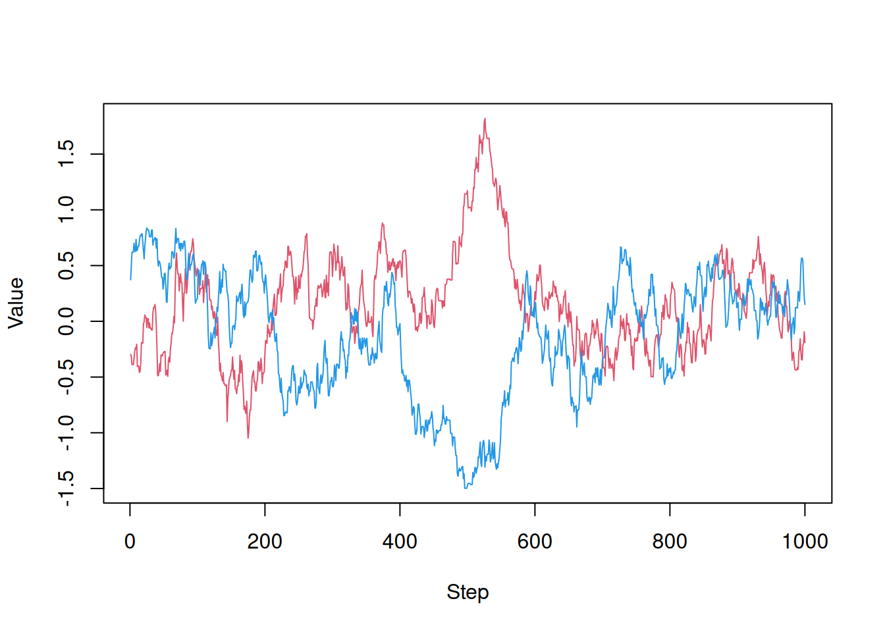
We could try improving the samples here by finding a better variance-covariance matrix (VCV), but the banana shape means a single VCV will not be ideal across the whole space.
13.2.3.1.2 Hamiltonian Monte Carlo on the Banana
Now let’s try the Hamiltonian Monte Carlo (HMC) sampler, which uses gradient information to move more efficiently in parameter space:
sampler_hmc <- monty_sampler_hmc(epsilon = 0.1, n_integration_steps = 10)
res_hmc <- monty_sample(m, sampler_hmc, 1000)
plot(t(drop(res_hmc$pars)), type = "l", col = "#0000ff33",
xlim = range(a), ylim = range(b))
lines(z95[, 1], z95[, 2])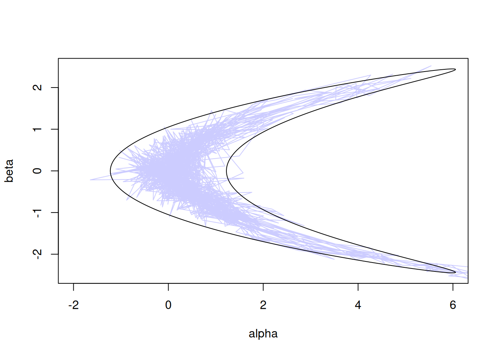
Or viewed over steps:
matplot(t(drop(res_hmc$pars)), lty = 1, type = "l", col = c(2, 4),
xlab = "Step", ylab = "Value")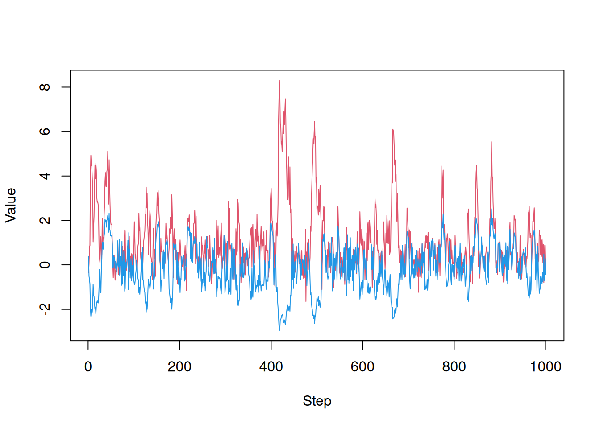
Clearly, HMC outperforms the random walk, rapidly exploring the full banana-shaped region with far less random wander.
13.2.4 Parallel Tempering Sampler
Parallel tempering (also known as replica exchange MCMC) is a technique designed to improve the mixing of Markov chain Monte Carlo methods, particularly in situations where the posterior distribution is multimodal or somehow challenging to explore.
Let’s for example define a simple Bayesian model where the likelihood is a mixture model:
ex_mixture <- function(x) log(dnorm(x, mean = 5) / 2 + dnorm(x, mean = -5) / 2)
likelihood <- monty_model_function(ex_mixture, allow_multiple_parameters = TRUE)and the prior is a normal distribution with a wider variance:
prior <- monty_dsl({
x ~ Normal(0, 10)
})and the posterior is simply the product of the two (or the sum if working with log-densities)
posterior <- likelihood + priorx <- seq(-10, 10, length.out = 1001)
y <- exp(posterior$density(rbind(x)))
plot(x, y / sum(y) / diff(x)[[1]], col = "red", type = 'l', ylab = "density")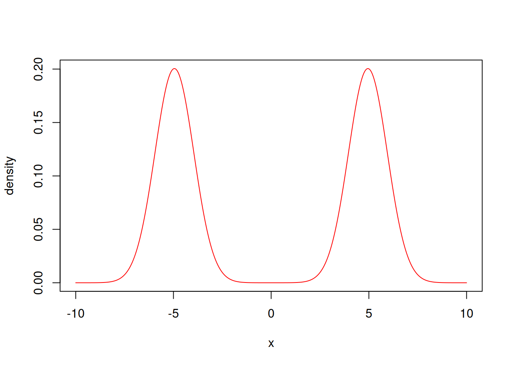
We’ll try to use the random walk Metropolis-Hastings sampler for this model
vcv <- matrix(1.5)
sampler_rw <- monty_sampler_random_walk(vcv = vcv)Once the sampler is built, the generic monty_sample() function can be used to generate samples:
res_rw <- monty_sample(posterior, sampler_rw, n_steps = 1000)plot(res_rw$pars[1, , ],
ylim = c(-8, 8),
ylab = "Value",
main = "RW samples (1 chain)")
abline(h = -5, lty = 3, col = "red")
abline(h = 5, lty = 3, col = "red")As we can see, the RW sampler does not manage to move outside of the mode that it starts from. MCMC theory tells us that it will eventually reach the other side of the distribution, whether with a (low probability) large jump or by accepting several consecutive small disadvantageous steps in the right direction. In practice, it can mean that the second mode might never be explored in the finite amount of time allowed for sampling.
One might think that running multiple chains from different initial values could solve the problem. Suppose then that we run three chains, starting at values -5, 0 and 5:
res_rw3 <- monty_sample(posterior, sampler_rw, n_steps = 1000, n_chains = 3,
initial = rbind(c(-5, 0, 5)))matplot(res_rw3$pars[1, , ], type = "p", pch = 21,
col = c("blue", "green", "purple"),
ylim = c(-8, 8), ylab = "Value", main = "RW samples (3 chains)")
abline(h = -5, lty = 3, col = "red")
abline(h = 5, lty = 3, col = "red")We can see with our three chains, we are exploring both modes, with \(\frac{1}{3}\) of our samples from one mode and \(\frac{2}{3}\) the other, which we know is not representative of the true distribution! So even if running multiple chains manages to help identify and explore more than one local mode, they cannot tell you anything about the relative densities of those modes if each chain ends up only exploring a single mode. Furthermore, there is no guarantee that simply running multiple chains from different starting points will even identify all modes, particularly in higher dimensions. We need a better way to make use of multiple chains, and that’s where parallel tempering comes in.
The core idea behind parallel tempering is to run multiple chains at different “temperatures” - where the posterior is effectively flattened or softened at higher temperatures - allowing the “hot” chains to move more freely across parameter space. Periodically, the states of the chains are swapped according to an acceptance rule that preserves the correct stationary distribution. The hope is that the higher-temperature chains will quickly explore multiple modes, and then swap states with the lower-temperature chains, thereby transferring information about other modes and improving overall exploration.
This can also be beneficial if your model can efficiently evaluate multiple points in parallel (via parallelisation or vectorisation). Even though parallel tempering runs multiple chains, the computational cost can be partly offset by improved mixing or by leveraging multiple CPU cores.
In monty, parallel tempering is implemented in the function monty_sampler_parallel_tempering() based on the non-reversible swap approach (Syed et al. 2022). We will use the RW sampler to sample with each chain within the parallel tempering sampler, but other samplers can also be used.
vcv <- matrix(1.5)
sampler_rw <- monty_sampler_random_walk(vcv = vcv)
s <- monty_sampler_parallel_tempering(sampler_rw, n_rungs = 10)Here, n_rungs specifies the number of additional chains (beyond the base chain) to run at different temperatures (so total chains = n_rungs + 1). The argument vcv is the variance-covariance matrix that will be passed to the underlying random-walk sampler. An optional base argument can be used to specify a “reference” model if your original model cannot be automatically decomposed into prior and posterior components, or if you want an alternative easy-to-sample-from distribution for the hottest rung.
res_pt <- monty_sample(posterior, s, 1000, n_chains = 1)plot(res_pt$pars[1,,],
ylim = c(-8, 8),
ylab = "Value",
main = "PT samples")
abline(h = -5, lty = 3, col = "red")
abline(h = 5, lty = 3, col = "red")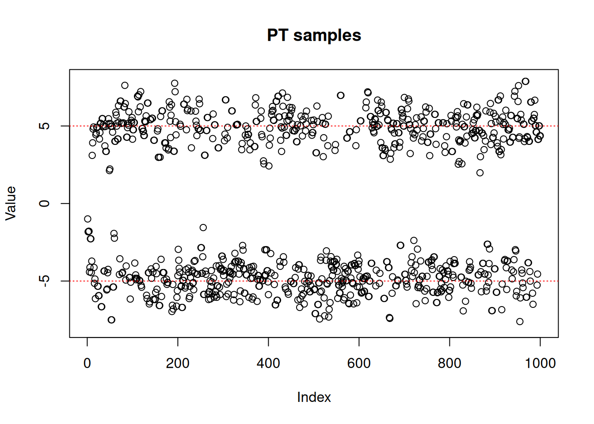
hist(c(res_pt$pars), freq = FALSE,
xlab = "Values of samples",
main = "Parallel tempering samples")
x <- seq(min(res_pt$pars), max(res_pt$pars), length.out = 1001)
y <- exp(posterior$density(rbind(x)))
lines(x, y / sum(y) / diff(x)[[1]], col = "red")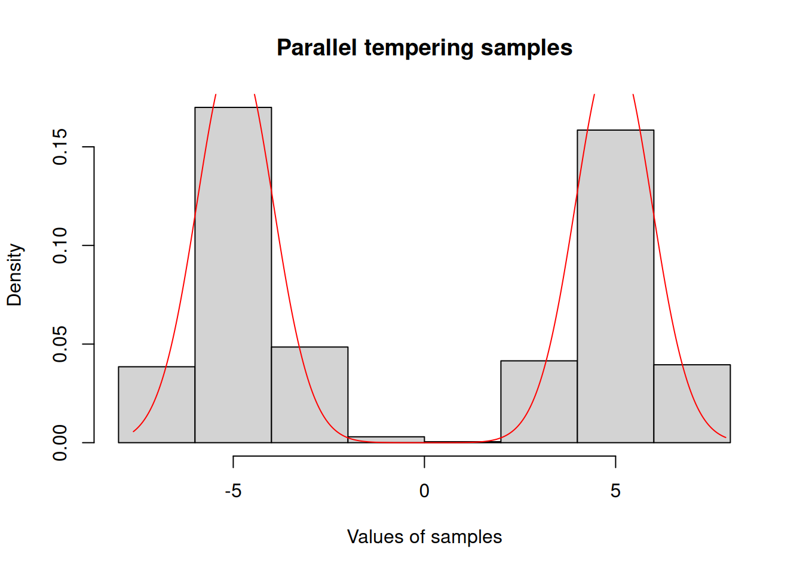
Note
A parallel tempering sampler performs more total computations than a single-chain sampler because it runs multiple chains simultaneously (n_rungs + 1 chains) with only the “coldest” chain targeting the distribution of interest. However, there are scenarios where this additional cost pays off:
Parallelisation: If your model can be efficiently evaluated across multiple cores, the wall-clock time may not be much larger than for a single chain - though CPU usage will naturally be higher.
Vectorisation: In R, if the density calculations can be vectorised, then evaluating multiple chains in one go (in a vectorised manner) may not cost significantly more than evaluating a single chain.
Multimodality: In models with multiple distinct modes, standard samplers often get “stuck” in a single mode. Parallel tempering can swap states between chains at different temperatures, making it more likely to fully explore all modes, thereby improving posterior exploration and reducing the risk of biased inference.